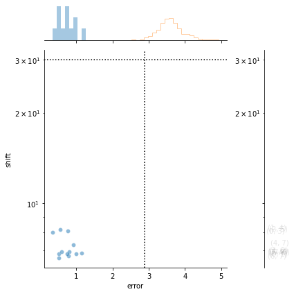
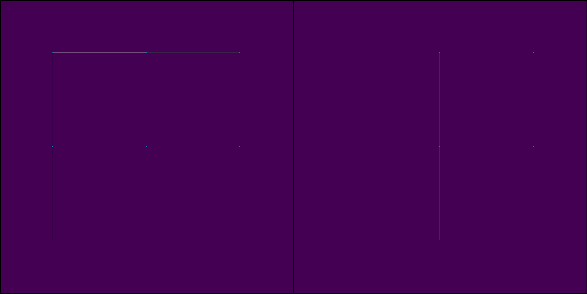

1. Example Stitching Notebook
[1]:
import os
from sparcstools.parse import parse_phenix
from sparcstools.stitch import generate_stitched
[3]:
input_dir = os.path.join("../../../test_data/example1/raw_image_tiles/")
slidename = "stitching_test"
outdir = os.path.join("../../../test_data/example1/", slidename)
overlap = 0.1 #adjust in case your data was aquired with another overlap
#define parameters to find correct slide in experiment folder
row = 2
well = 4
zstack_value = 1
timepoint = str(1)
#define on which channel should be stitched
stitching_channel = "Alexa488"
output_filetype = [".tif"] #one of .tif, .ome.tif, .ome.zarr (can pass several if you want to generate all filetypes)
#adjust cropping parameter
crop = {'top':0, 'bottom':0, 'left':0, 'right':0} #this does no cropping
#create output directory if it does not exist
if not os.path.exists(outdir):
os.makedirs(outdir)
#define pattern to recognize which slide should be stitched
#remember to adjust the zstack value if you aquired zstacks and want to stitch a speciifc one in the parameters above
pattern = "Timepoint"+str(timepoint.zfill(3) +"_Row"+ str(row).zfill(2) + "_" + "Well" + str(well).zfill(2) + "_{channel}_"+"zstack"+str(zstack_value).zfill(3)+"_r{row:03}_c{col:03}.tif")
generate_stitched(input_dir,
slidename,
pattern,
outdir,
overlap,
crop = crop ,
stitching_channel = stitching_channel,
filetype = output_filetype)
performing stichting with 0.1 overlap.
performing stitching on channel Alexa488 with id number 0
True
quantifying alignment error 1000/1000
aligning edge 12/12
/Users/sophia/Documents/GitHub/SPARCStools/src/sparcstools/_custom_ashlar_funcs.py:93: UserWarning:
`distplot` is a deprecated function and will be removed in seaborn v0.14.0.
Please adapt your code to use either `displot` (a figure-level function with
similar flexibility) or `histplot` (an axes-level function for histograms).
For a guide to updating your code to use the new functions, please see
https://gist.github.com/mwaskom/de44147ed2974457ad6372750bbe5751
sns.distplot(
/Users/sophia/Documents/GitHub/SPARCStools/src/sparcstools/_custom_ashlar_funcs.py:97: UserWarning:
`distplot` is a deprecated function and will be removed in seaborn v0.14.0.
Please adapt your code to use either `displot` (a figure-level function with
similar flexibility) or `histplot` (an axes-level function for histograms).
For a guide to updating your code to use the new functions, please see
https://gist.github.com/mwaskom/de44147ed2974457ad6372750bbe5751
sns.distplot(
need to implement this here. TODO
writing results to one large tif.
0%| | 0/3 [00:00<?, ?it/s]
merging tile 5/9True
merging tile 9/9
33%|███▎ | 1/3 [00:02<00:04, 2.37s/it]
merging tile 1/9True
merging tile 4/9True
merging tile 5/9True
merging tile 7/9True
merging tile 9/9True
67%|██████▋ | 2/3 [00:03<00:01, 1.83s/it]
merging tile 1/9True
merging tile 4/9True
merging tile 6/9True
merging tile 7/9True
merging tile 9/9
100%|██████████| 3/3 [00:05<00:00, 1.77s/it]
Merging Pipeline completed in 0.2415327986081441 minutes.


1.1. Visualize Stitching Output
[14]:
import matplotlib.pyplot as plt
from tifffile import imread
fig, axs = plt.subplots(1, 3, figsize = (30, 10))
axs[0].imshow(imread(f"{outdir}/stitching_test_Alexa488.tif"))
axs[0].axis("off")
axs[1].imshow(imread(f"{outdir}/stitching_test_DAPI.tif"))
axs[1].axis("off")
axs[2].imshow(imread(f"{outdir}/stitching_test_mCherry.tif"))
axs[2].axis("off")
[14]:
(-0.5, 3037.5, 3039.5, -0.5)